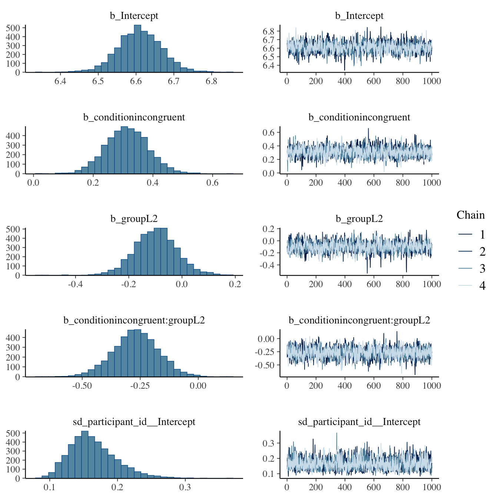
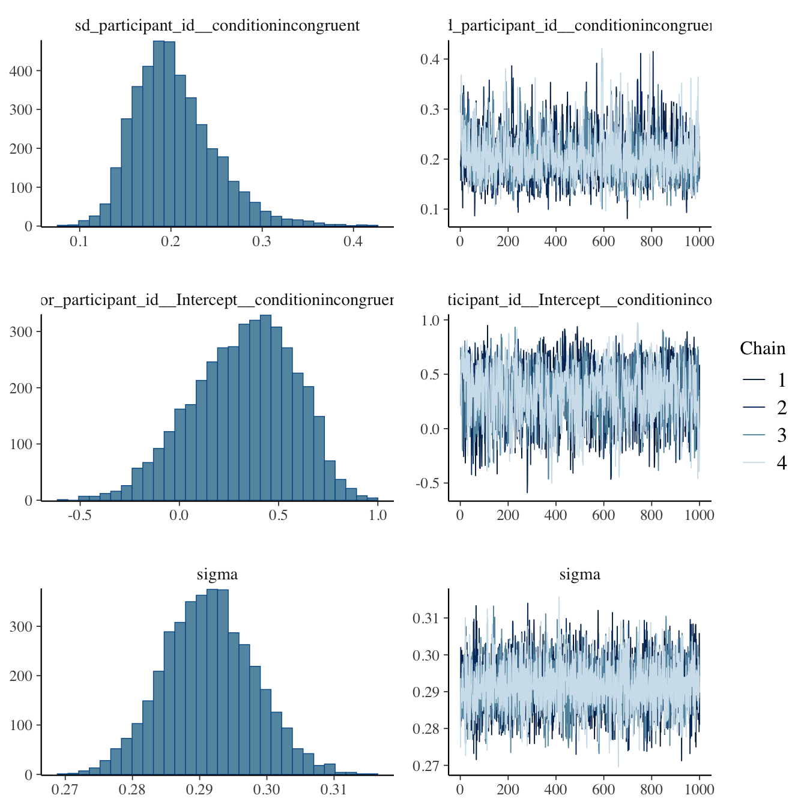

The Stroop task is one of the most classic experimental paradigms in cognitive psychology. First described by Stroop (Stroop 1935), the task requires participants to name the font color of a color word while ignoring the word’s meaning. Studies have consistently found that when word meanings and font colors are incongruent (e.g., “RED” is written in blue), participants’ reaction times are significantly longer and their error rates are higher, while they perform better under congruent conditions (e.g., “RED” is written in red). This phenomenon is knows as the Stroop interference effect and is generally explained as a conflict between automated lexical semantic processing and conscious color naming (MacLeod 1991).
For bilingual speakers, the Stroop task provides a window into how the two language systems influence each other. Research shows that L2 speakers often exhibit a greater interference effect than L1 native speakers when completing the Stroop task (Chen and Ho 1986; Rosselli et al. 2002). This is generally attributed to the lower level of automation in L2 lexical access: because L2 word processing is less fluent and automatic than L1, suppressing semantic interference requires more cognitive resources, resulting in longer reaction times under inconsistent conditions.
However, this picture is not so simple. Factors such as L2 proficiency, age of acquisition, and frequency of daily use all modulate the magnitude of the L2 Stroop effect (Chen and Ho 1986). Notably, L2 users with very low proficiency sometimes exhibit a smaller interference effect, because their L2 vocabulary activation intensity is insufficient to produce significant interference.
1.1 Research Questions/Hypotheses
The present study investigates the Stroop interference effect in an English Stroop task comparing native English speakers (L1) and Mandarin-speaking learners of English as a second language (L2).
RQ1: Is there a Stroop interference effect (i.e., longer RTs and lower accuracy in incongruent vs congruent trials) in both L1 and L2 speakers of English?
RQ2: Was there a significant difference in the magnitude of the Stroop interference effects between the two groups?
RH1: Significant Stroop interference effects are expected in both groups, manifested as longer RTs under incongruent conditions.
RH2: The interference effect is expected to be greater for L2 users than for L1 users, reflecting a lower degree of automation in L2 lexical processing.
2 Methods
Participants: A total of 20 participants were recruited, divided into two groups: L1 native English speakers (n = 10, English as their native language) and L2 English users (n = 10, Chinese as their native language and English as their second language). Participants were recruited through the University of Edinburgh’s personal social network. All participants reported normal or corrected visual acuity and no color vision deficiency.
Materials: The experiment was conducted online via Testable (testable.org). The stimuli consisted of four English color words (“RED”, “BLUE”, “GREEN”, “YELLOW”), presented in four font colors (red, blue, green, and yellow). Trials were divided into congruent conditions (word meaning and font color were the same, 4 combinations) and incongruent conditions (word meaning and font color were different, 12 combinations). Participants responded by pressing keys on a keyboard (LEFT=red, UP=blue, RIGHT=green, DOWN=yellow).
Procedure: Participants first completed 8 practice trials, followed by 48 formal trials (24 congruent and 24 incongruent), presented in a randomized order. Each trial began with a 800ms fixation point, followed by the presentation of the target stimulus until the participant responded or reached the 3000ms upper limit. After finishing the trials, they completed a simple questionnaire (native language, years of English learning experience, and self-assessment of English proficiency from 1 to 5).
Statistical Analysis: Data were analyzed using R (Wickham et al. 2019). Preprocessing excluded incorrect responses, overly rapid responses with a response time (RT) < 200 ms, and overly slow responses with an RT > 2500 ms or exceeding the individual mean by 3 standard deviations.
A Bayesian linear mixed-effects model was fitted using the brms package (Bürkner 2017), with raw RT as the outcome variable and a log-normal response distribution to account for the right skew typical of response time data. Fixed effects included condition (congruent vs. incongruent; congruent as reference level), group (L1 vs. L2; L1 as reference level), and their interaction. The random effects structure included by-participant random intercepts and by-participant random slopes for condition. Results are interpreted using 90% Credible Intervals (CrI).
The interaction term condition × group directly addresses RQ2: if the 90% CrI of the interaction coefficient lies entirely below zero, this indicates that the Stroop interference effect is smaller in L2 speakers than in L1 speakers. The main effect of condition addresses RQ1: if its 90% CrI lies entirely above zero, this provides evidence for a Stroop interference effect.
Data Availability: All data, analysis code, and experimental materials are publicly stored at: [https://github.com/hannahnnniu/RMDL-CW2/tree/main/data]. Analysis is fully computably reproducible; all analyses are performed in R (version 4.5.1), and package versions are recorded via sessionInfo() at the end of the report.
3 Data
3.1 Read and process the data
The data were collected from 20 participants via Testable. Each participant’s data was stored as a separate CSV file. The files were read into R and merged into a single data frame. Practice trials and form rows were excluded, retaining only critical test trials. A group variable was created from the questionnaire response to “Are you a native speaker of English?”: participants answering “Yes” were assigned to the L1 group, and those answering “No” to the L2 group.
Trials were excluded if the response was incorrect, if RT was below 200ms (anticipatory responses), above 2500ms, or more than 3 standard deviations above the participant’s mean RT.
The relevant columns in the data are as follows:
participant_id: unique identifier for each participant, derived from the filename
condition: whether the trial was congruent (word meaning matches ink color) or incongruent (word meaning does not match ink color)
group: L1 (native English speakers) or L2 (Mandarin-native English learners)
RT: response time in milliseconds
correct: whether the response was correct (1) or incorrect (0)
library(tidyverse)library(brms)# Read and merge all CSV filesdata_path <-"data/"raw_data <-list.files(path = data_path,pattern ="*.csv",full.names =TRUE) |>map(\(file) { d <-read_csv(file, skip =3, show_col_types =FALSE) d$participant_id <-basename(file) d }) |>list_rbind()# Extract questionnaire dataquestionnaire <- raw_data |>filter(type =="form") |>select(participant_id, head, response) |>pivot_wider(names_from = head, values_from = response) |>rename(native_speaker =`Are you a native speaker of English?`,english_years =`How long have you been learning/using English?`,proficiency =`How would you rate your English proficiency?`,colour_deficiency =`Do you have any colour vision deficiency?` )# Extract formal experimental trials and merge questionnairesexp_data <- raw_data |>filter(type =="test", condition1 =="critical") |>select(participant_id, stim1, textColor, condition2, RT, correct) |>rename(condition = condition2) |>left_join( questionnaire |>select(participant_id, native_speaker, english_years, proficiency, colour_deficiency),by ="participant_id" ) |>filter(colour_deficiency =="No") |>mutate(group =if_else(native_speaker =="Yes", "L1", "L2"),group =factor(group, levels =c("L1", "L2")),condition =factor(condition, levels =c("congruent", "incongruent")) )# Remove non-compliant datan_before <-nrow(exp_data)exp_data_clean <- exp_data |>filter(correct ==1) |>filter(RT >=200, RT <=2500) |>group_by(participant_id) |>filter(abs(RT -mean(RT)) <=3*sd(RT)) |>ungroup() |>mutate(log_rt =log(RT))n_after <-nrow(exp_data_clean)n_excluded <- n_before - n_afterpct_excluded <-round(n_excluded / n_before *100, 1)cat("Trials before exclusion:", n_before, "\n")
Three plots were produced to explore the data prior to modelling.
Plot 1 is a violin plot overlaid with a boxplot, showing the distribution of raw RT by condition (x-axis) and group (fill color: blue = L1, red = L2). This allows visual inspection of the overall Stroop effect and any group differences in RT distributions.
Plot 2 shows the Stroop interference effect (incongruent response time minus congruent response time, in milliseconds) for each participant. The points in the figure show slight horizontal fluctuations, and the horizontal line represents the group mean. This figure visually demonstrates whether L2 participants exhibit a greater interference effect.
Plot 3 shows mean RT per condition and group with error bars (±1 SE), providing a summary of the central tendency alongside variability.
# Plot 1ggplot(exp_data_clean, aes(x = condition, y = RT, fill = group)) +geom_violin(alpha =0.4, position =position_dodge(0.8)) +geom_boxplot(width =0.2, position =position_dodge(0.8),outlier.shape =NA) +scale_fill_manual(values =c("L1"="#3498db", "L2"="#e74c3c")) +labs(title ="RT Distribution by Condition and Group",x ="Condition", y ="Response Time (ms)", fill ="Group" ) +theme_minimal()
The table below reports mean RT, standard deviation, median RT, and number of trials per condition and group, calculated on the cleaned data (correct trials only, after RT exclusions).
To address RQ1 and RQ2, a Bayesian linear mixed-effects model was fitted using the brms package (Bürkner 2017), with RT as the outcome variable and a log-normal response distribution to account for the right skew typical of response time data. This approach models RT directly without requiring manual log-transformation.
The model included the following fixed effects: condition (congruent vs. incongruent; congruent as reference level), group (L1 vs. L2; L1 as reference level), and their interaction (condition × group). The random effects structure included by-participant random intercepts and by-participant random slopes for condition, to account for the fact that each participant contributed multiple observations and that the effect of condition may vary across individuals.
The interaction term condition × group directly addresses RQ2: a 90% Credible Interval (CrI) lying entirely below zero would indicate that the Stroop interference effect is smaller in L2 speakers relative to L1 speakers. The main effect of condition addresses RQ1: a CrI lying entirely above zero would provide evidence for a Stroop interference effect. Results are reported as posterior median estimates with 90% CrIs.
Family: lognormal
Links: mu = identity
Formula: RT ~ condition * group + (1 + condition | participant_id)
Data: exp_data_clean (Number of observations: 908)
Draws: 4 chains, each with iter = 2000; warmup = 1000; thin = 1;
total post-warmup draws = 4000
Multilevel Hyperparameters:
~participant_id (Number of levels: 20)
Estimate Est.Error l-90% CI u-90% CI Rhat
sd(Intercept) 0.16 0.03 0.11 0.23 1.00
sd(conditionincongruent) 0.20 0.04 0.14 0.29 1.00
cor(Intercept,conditionincongruent) 0.32 0.26 -0.13 0.70 1.00
Bulk_ESS Tail_ESS
sd(Intercept) 1736 2608
sd(conditionincongruent) 1633 2246
cor(Intercept,conditionincongruent) 1447 2040
Regression Coefficients:
Estimate Est.Error l-90% CI u-90% CI Rhat Bulk_ESS
Intercept 6.61 0.06 6.52 6.70 1.00 1091
conditionincongruent 0.31 0.07 0.20 0.43 1.00 1459
groupL2 -0.10 0.08 -0.23 0.03 1.00 1180
conditionincongruent:groupL2 -0.27 0.10 -0.43 -0.11 1.00 1511
Tail_ESS
Intercept 1820
conditionincongruent 2060
groupL2 1936
conditionincongruent:groupL2 2000
Further Distributional Parameters:
Estimate Est.Error l-90% CI u-90% CI Rhat Bulk_ESS Tail_ESS
sigma 0.29 0.01 0.28 0.30 1.00 5917 3037
Draws were sampled using sampling(NUTS). For each parameter, Bulk_ESS
and Tail_ESS are effective sample size measures, and Rhat is the potential
scale reduction factor on split chains (at convergence, Rhat = 1).
The model converged successfully, with all Rhat values equal to 1.00 and adequate effective sample sizes (Bulk_ESS > 1000 for all parameters), indicating reliable posterior estimates.
RQ1: Stroop interference effect: The main effect of condition for L1 speakers was \(\beta\) = 0.31 (90% CrI [0.20, 0.43]). As the CrI lies entirely above zero, there is evidence for a robust Stroop interference effect in L1 speakers: incongruent trials elicited reliably longer RTs than congruent trials.
RQ2: Group difference: The condition × group interaction was \(\beta\) = -0.27 (90% CrI [-0.43, -0.11]). As the CrI lies entirely below zero, there is evidence that the Stroop interference effect was reliably smaller in L2 speakers than in L1 speakers. The estimated interference effect for L1 speakers was \(\beta\) = 0.31 (90% CrI [0.20, 0.43]), whereas for L2 speakers it was \(\beta\) = 0.04 (90% CrI [-0.07, 0.16]). As the L2 CrI includes zero, there is not enough evidence to conclude that L2 speakers showed a reliable Stroop interference effect. These findings are contrary to RH2, which predicted a larger interference effect in L2 speakers.
The main effect of group was \(\beta\) = -0.10 (90% CrI [-0.23, 0.03]). As the CrI includes zero, there is no reliable evidence for a difference in baseline RT between L1 and L2 speakers on congruent trials.
The fixed effects coefficients and their 90% credible intervals are summarised below using fixef().
The figure below shows the model-predicted mean RT (on the original millisecond scale) for each condition and group, with 95% credible intervals. L1 speakers (pink) show a large increase in predicted RT from congruent (~770ms) to incongruent (~1060ms) trials, indicating a robust Stroop interference effect. In contrast, L2 speakers (teal) show minimal difference between congruent (~705ms) and incongruent (~735ms) conditions. Notably, the credible interval for L1 speakers in the incongruent condition is considerably wider than all other conditions, reflecting the large individual variability in Stroop interference observed among L1 speakers.
To directly estimate the Stroop interference effect for each group, posterior draws were extracted and the L2 interference effect was calculated by combining the main effect of condition with the interaction term.
# Calculate the interference effect of group L2stroop_draws <-as_draws_df(stroop_bm) |>mutate(# Interference effect of group L1stroop_L1 = b_conditionincongruent,# Interference effect of group L2 = Main effect + Interaction termstroop_L2 = b_conditionincongruent +`b_conditionincongruent:groupL2` )quantile(stroop_draws$stroop_L1, probs =c(0.05, 0.5, 0.95)) |>round(2)
The estimated Stroop interference effect for L1 speakers was \(\beta\) = 0.31 (90% CrI [0.20, 0.43]). As the CrI lies entirely above zero, there is strong evidence for a reliable interference effect in L1 speakers. In contrast, the estimated interference effect for L2 speakers was \(\beta\) = 0.04 (90% CrI [-0.07, 0.16]). As this CrI includes zero, there is not enough evidence to conclude that L2 speakers showed a reliable Stroop interference effect.
The plots below show the posterior distributions (left) and trace plots (right) for the model parameters. Trace plots show the sampling behaviour of the 4 chains across 1000 post-warmup iterations.
# Model diagnosticsplot(stroop_bm)


All posterior distributions show smooth, unimodal shapes, and all trace plots show good chain mixing with no evidence of divergence or non-convergence, confirming that the model sampled reliably.
5 Discussion
This study investigated the Stroop interference effect in L1 and L2 English speakers. In line with RH1, a robust Stroop interference effect was observed in L1 speakers (\(\beta\) = 0.31, 90% CrI [0.20, 0.43]), replicating the classic finding that incongruent colour-word combinations slow response times (Stroop 1935; MacLeod 1991). However, contrary to RH2, L2 speakers showed a substantially smaller and unreliable interference effect (\(\beta\) = 0.04, 90% CrI [-0.07, 0.16]), suggesting that the Stroop effect may not generalise equally across speakers with different levels of English proficiency.
The absence of a reliable Stroop interference effect in L2 speakers is consistent with accounts of reduced automaticity in L2 lexical access. If L2 colour words are not processed automatically, semantic activation may be insufficient to generate meaningful interference during ink colour naming. This interpretation aligns with the view that Stroop interference requires a threshold level of automaticity to emerge (Chen and Ho 1986): speakers who have not reached this threshold may show little or no interference, regardless of their general language proficiency.
Several limitations should be noted. First, the sample size was small (n = 10 per group), which limits statistical power and the generalisability of the findings. The wide credible interval for the L2 interference effect (90% CrI [-0.07, 0.16]) suggests that a larger sample may be needed to draw firm conclusions. Second, L2 proficiency was measured only through self-report (a 1–5 scale and years of English study), which may not accurately reflect actual automaticity of lexical access. Future studies should incorporate objective proficiency measures. Third, all L2 participants were Mandarin-speaking students at the University of Edinburgh, who may represent a relatively homogeneous and highly proficient L2 group, limiting the range of proficiency levels observed.
Informal feedback from participants revealed several additional methodological concerns. First, the keyboard-based response format, which requires participants to remember the mapping between four colors and four keys, placed considerable demands on working memory. This additional cognitive load may have inflated RTs across all conditions and could have disproportionately affected participants less familiar with keyboard-based tasks. Future studies could use a more intuitive response method, such as mouse-clicking on color patches, to reduce this confound. Second, some L2 participants reported that once they understood the task instructions, they adopted a strategy of deliberately ignoring the word and focusing exclusively on the ink color. If L2 speakers strategically suppressed word reading more effectively than L1 speakers, this could account for the reduced interference effect observed, independently of automaticity. This strategic account represents an alternative explanation that cannot be ruled out with the current design. Third, participants reported occasional miskey errors that they pressed the wrong key and immediately recognised the mistake, suggesting that some incorrect responses reflected motor errors rather than genuine processing failures. Although incorrect trials were excluded from the RT analysis, future studies could incorporate a post-response confidence rating to better distinguish processing errors from motor slips.
In conclusion, the present study found a clear Stroop interference effect in L1 English speakers, but not in L2 speakers. This pattern is consistent with reduced automaticity of lexical access in L2, and suggests that the magnitude of the Stroop effect may be modulated by language dominance and proficiency. Future research with larger and more proficiency-diverse samples would help clarify the relationship between L2 automaticity and Stroop interference.
Bürkner, Paul-Christian. 2017. “Brms: An r Package for Bayesian Multilevel Models Using Stan.”Journal of Statistical Software 80: 1–28.
Chen, Hsuan-chih, and Connie Ho. 1986. “Development of Stroop Interference in Chinese-English Bilinguals.”Journal of Experimental Psychology: Learning, Memory, and Cognition 12 (3): 397.
MacLeod, Colin M. 1991. “Half a Century of Research on the Stroop Effect: An Integrative Review.”Psychological Bulletin 109 (2): 163.
Rosselli, Mónica, Alfredo Ardila, Mirtha N Santisi, Marı́a Del Rosario Arecco, Judy Salvatierra, Alejandra Conde, and BONIE Lenis. 2002. “Stroop Effect in Spanish–English Bilinguals.”Journal of the International Neuropsychological Society 8 (6): 819–27.
Stroop, J Ridley. 1935. “Studies of Interference in Serial Verbal Reactions.”Journal of Experimental Psychology 18 (6): 643.
Wickham, Hadley, Mara Averick, Jennifer Bryan, Winston Chang, Lucy D’Agostino McGowan, Romain François, Garrett Grolemund, et al. 2019. “R: A Language and Environment for Statistical Computing.”Journal of Open Source Software 8: 1–20.